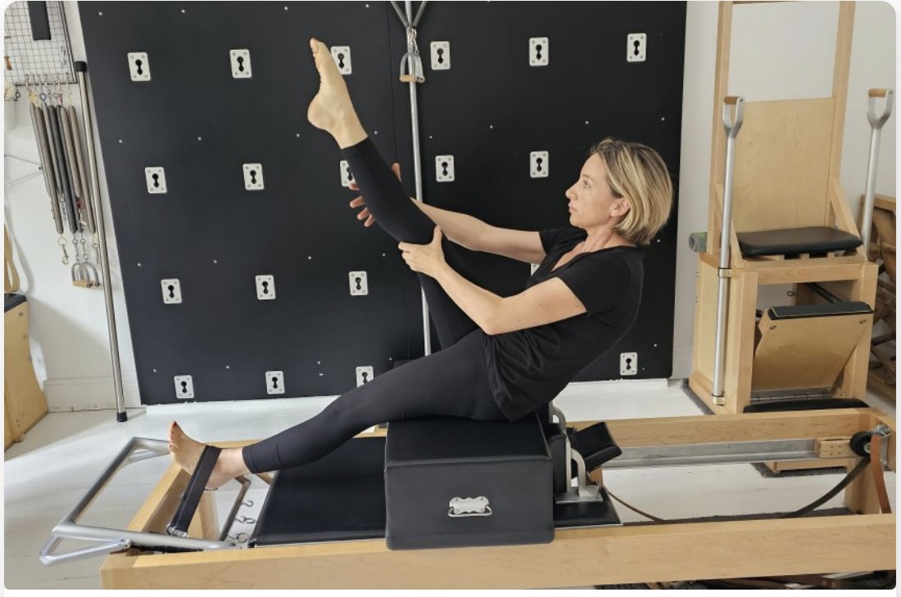
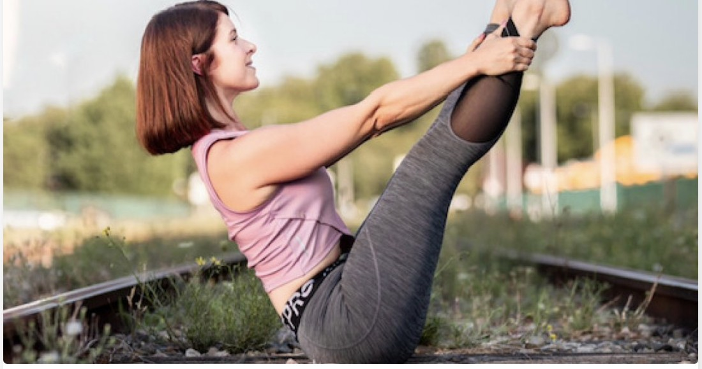
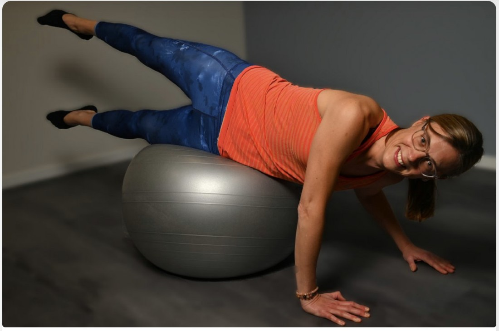
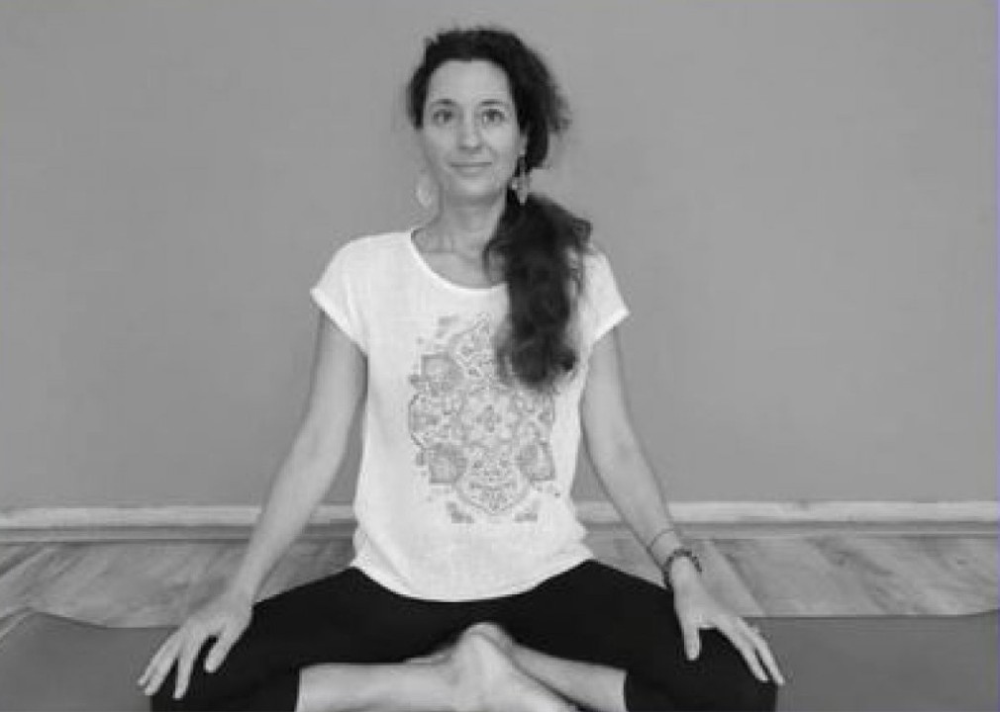
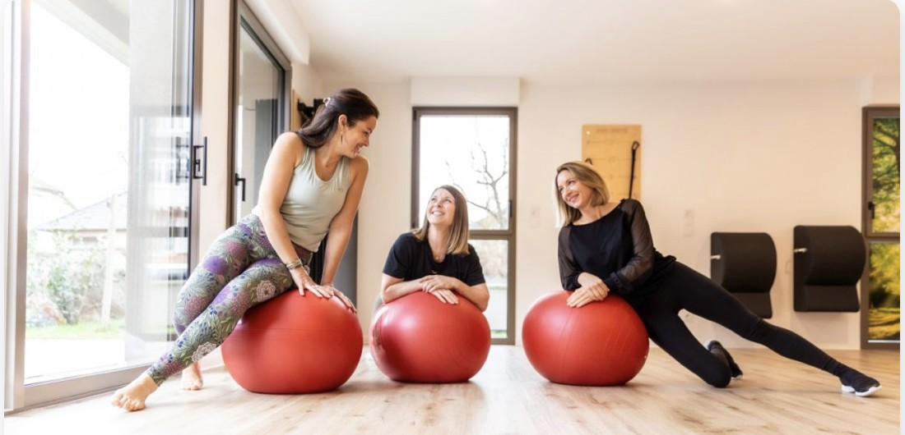

Bienveillance
Chaque corps est différent. Nous adaptons les mouvements plutôt que de forcer une seule méthode.
Pause Pilates est né d'une conviction simple : les cours de Pilates ont toujours été une vraie pause dans le quotidien, une parenthèse nécessaire pour se recentrer sur soi et reprendre son souffle.

Sportive depuis l'enfance, je décide à l'âge de 30 ans de m'orienter professionnellement vers l'enseignement de la gymnastique de forme. J'étudie au CREPS de Nancy et obtiens mon BPJEPS des métiers de la forme et de la force. J'ai rapidement le désir de me spécialiser dans les gymnastiques douces. Je découvre le Pilates et c'est un vrai coup de cœur.
J'intègre un centre de formation en Suisse et j'obtiens, à l'issue d'une année d'étude, un diplôme me permettant d'enseigner le Pilates au sol sur tapis. Après quelques années où je donne des cours dans différentes salles et studios de Pilates, je décide d'approfondir ma connaissance de cette discipline. J'intègre donc la formation créée par Lolita Legacy, élève directe de Joseph Pilates, au studio Pilates de Strasbourg dispensée par Katia Hammouch. Au bout de deux années de formation, je suis habilitée à enseigner le Pilates sous toutes ses formes, au sol, avec du matériel et sur machines.
Plus je fais du Pilates, plus je trouve cette méthode incroyable. C'est cette passion qui m'amène aujourd'hui à ouvrir mon propre studio, pour pouvoir la partager et la transmettre. Je l'ai appelé Pause Pilates car pour moi les cours de Pilates ont toujours été une vraie pause dans le quotidien, une parenthèse nécessaire pour se recentrer sur soi et reprendre son souffle.
Prendre rendez-vous
Professeure de PilatesÉducatrice sportive depuis 10 ans, je me suis rapidement formée au Pilates. J'y ai retrouvé certaines similitudes avec la danse classique, que j'ai pratiquée pendant 12 ans. Ce que j'aime le plus enseigner, c'est comment aller plus loin dans la conscience de son corps et de sa respiration.

Pilates & coach Munz Floor®Après 15 années en tant qu'infirmière spécialisée en cardiologie, j'ai cheminé dans mon rapport au soin, au corps et au mieux-être. Diplômée chez CNFK Leaderfit en Pilates Matwork et petits matériels, et certifiée Munz Floor®, je propose aussi des séances spécifiques de libération des fascias par des mouvements spiralés d'une extrême lenteur.

Professeure de YogaDiplômée sophrologue/relaxologue depuis 2012 et professeure de Yoga depuis 2019 (formation YogaWorks, reconnue Yoga Alliance), je propose le Yin Yoga chez Pause Pilates : une pratique de postures tenues au sol, en lien avec les énergies de la saison, pour libérer les tensions physiques et émotionnelles.

Chaque corps est différent. Nous adaptons les mouvements plutôt que de forcer une seule méthode.
Une pédagogie précise, fondée sur l'anatomie et les principes fondateurs du Pilates.
Un dialogue constant avec chaque élève pour ajuster l'intensité et le rythme des séances.
Des progrès durables construits sur la régularité, pas sur la performance à tout prix.
Un espace où l'on vient se ressourcer. Un studio à taille humaine, pour pouvoir personnaliser le travail, répondre aux différents besoins, prendre du temps pour chaque personne.
« Un corps libre de tensions et de fatigue permet d'affronter toutes les complexités de la vie. » — Joseph Pilates
Facilement accessible, notre studio vous accueille pour des cours de Pilates et de Yoga dans un cadre lumineux et apaisant, équipé de reformers, cadillac et petit matériel.
Venir visiter le studio